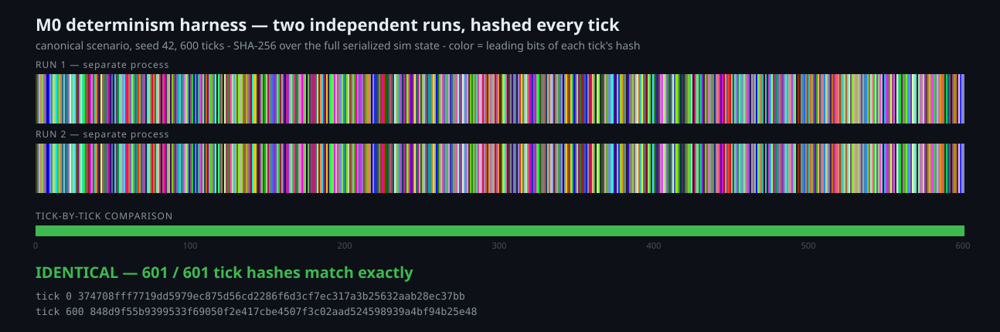

601 Identical Hashes
Black Magic's multiplayer model transmits nothing but player commands. Every client computes the identical simulation, and a replay is just the command log. That architecture let StarCraft 2 run 200-unit battles on 2008 internet connections, and it works only if one property holds absolutely: the same commands must produce the same game, bit for bit, on every machine.
That property cannot be retrofitted. If C# could not deliver it across operating systems and runtimes, the engine decision from Episode 1 was wrong, and I wanted to know while changing course cost a week of evenings instead of a year. That was milestone zero: prove determinism, or kill the architecture cheap.
The staff wrote the acceptance tests first, and I approved the contract before implementation began: what fixed-point overflow does, how command ordering breaks ties, what gets hashed. Fifty tests later the sim core exists. Fix64 math with no floats anywhere, a tick loop fed by a command queue, and a harness that serializes the entire sim state and hashes it with SHA-256, every tick.
The canonical scenario: seed 42, six hundred ticks of scripted commands. Run it twice in separate processes, compare all 601 hashes (tick zero counts). Then the stronger version: a golden hash file generated on my Windows machine under .NET 10 is checked into the repo, and CI re-verifies every hash on Ubuntu and on Windows under .NET 8, on every push. Different OS, different runtime, bit-identical state. If divergence ever appears, the harness reports the first differing tick.

M0's appetite was a week of evenings. It closed in a day.
I am resisting the obvious conclusion, because inflating the next milestone's scope is exactly how an RTS becomes a decade project. The better reading: an appetite exists to absorb the unknowns that are actually risky, and M0's headline risk turned out to be dead on arrival. M1's risk is different in kind. It is the first milestone that touches the Unity editor, where the AI staff is weakest and I start doing hands-on work myself. That is what its two weeks of evenings are for. The appetite stays; the thing it insures against changes.
M1, First Marine: one unit on a ground plane, moving where the mouse clicks, the sim driving Unity across the one-way boundary. The first clip will be ugly. It will also be the first time Black Magic looks like a game.